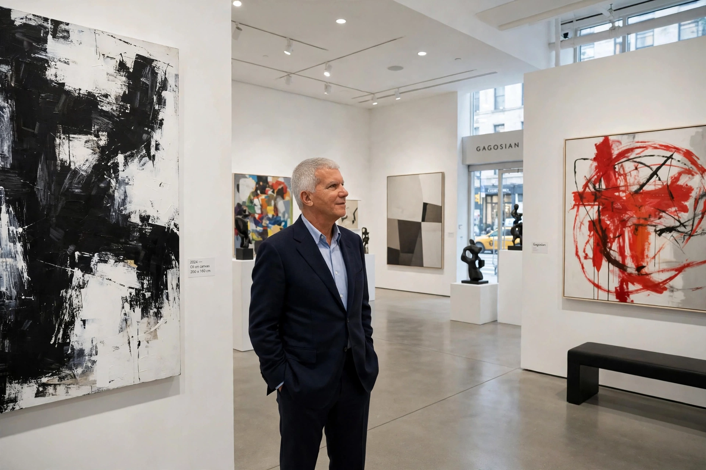

Lawrence Gilbert Gagosian (born 19 April 1945) is an American art dealer who founded Gagosian, a global network of galleries representing many of the world's most prominent contemporary and modern artists.

| Born | 19 April 1945, Los Angeles, California, USA |
|---|---|
| Occupation | Art dealer |
| Known for | Founding Gagosian galleries |
Of Armenian descent, Gagosian began by selling posters near UCLA, where he had studied English literature. He opened his first gallery in Los Angeles in 1979 and expanded to New York in the 1980s, working with Leo Castelli and handling secondary-market sales of blue-chip works. Gagosian grew to some eighteen galleries worldwide — in New York, Los Angeles, London, Paris, Hong Kong and elsewhere — staging museum-scale exhibitions.
Artists represented or exhibited have included Jean-Michel Basquiat, Jeff Koons, Damien Hirst, Cy Twombly, Richard Serra and Takashi Murakami. Frequently described as the world's most powerful art dealer, Gagosian has also faced tax and authenticity disputes, including a 2016 settlement over New York sales tax.